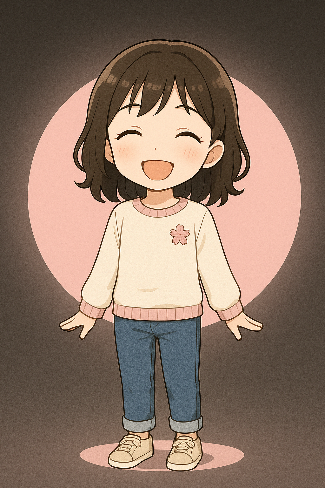

こんにちは！
まごのTECだよ。
スマホやネットのことで、
なにか困ってない？
こんにちは！
まごのTECだよ。
スマホやネットのことで、
なにか困ってない？
困っていることを、
一言で書いてみてね。
このアプリは、
スマホやネットの
「ちょっと困った」を、
まごが説明するみたいに、
ゆっくり案内するための
アプリです。
ことばにするのが
むずかしいときは、
むりにがんばらなくて
大丈夫です。
たとえば、
「LINEの画面がかわった」
「写真がどこかに行った」
など、
思いついたことを、
そのまま書いてください。
いっしょに、
ゆっくり見ていきましょう。
このアプリは、
スマホやネットが苦手な
ご家族が、
「いまさら聞きづらいこと」を、
気楽に相談できるように
作りました。
このアプリが、
ご家族どうしの会話の
きっかけになれば、
とてもうれしいです。